You can also bring up the New Factory Component Wizard from the contextual menu.
You can also bring up the New Factory Component Wizard from the contextual menu.
| EGF Tutorial |
Summary
Generating content such as source code can save you time in your projects and can reduce the amount of tedious redundant programming. Generating can be powerful, but the program that writes the code can quickly become very complex and hard to understand. One way to reduce complexity and increase readability is to use EGF.
EGF project contains two very powerful tools for generating outputs: The factory component (FC) task factory and the pattern. A factory component, as a software production unit, allows to drive massive code production. A factory component can either directly generate outputs and/or delegate to other factory components the outputs generation, a workflow is established this way.
In this tutorial you will learn how to :
- create a new factory component
- create a task factory
- create a contract
- create a context
- execute the factory component
- use factory component workflow
- create a factory component by code
Copyright © 2008 Thales Corporate Services S.A.SFebruary 28, 2008Copyright © 2009 Thales Corporate Services S.A.SJanuary 30, 2009
Before creating our first factory component, you will need the EGF Engine plug-ins.
If you haven't installed it yet, you can get a fully package version here.
Install it before continuing with this tutorial.
Let's start with the famous example of displaying the message "Hello, message" where message is something entred by the end-user.
So as to create our first example, the following steps are required :
First, switch to the EGF perspective.
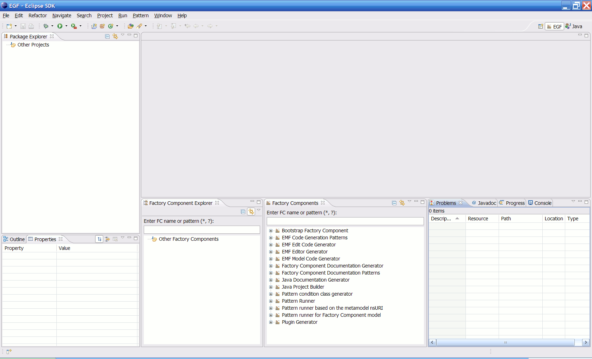
EGF perspective contains two main views :From the workbench menu, select File > New > Project to bring up the New Project wizard. In the EGF category, select the New Factory Component Wizard.
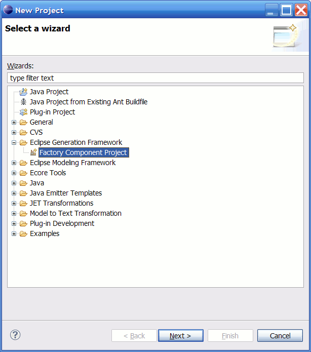
You can also bring up the New Factory Component Wizard from the contextual menu.
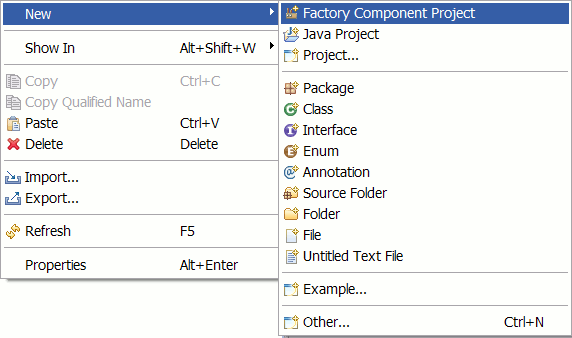
Click Next, the FC wizard project page is displayed as shown in the image below.

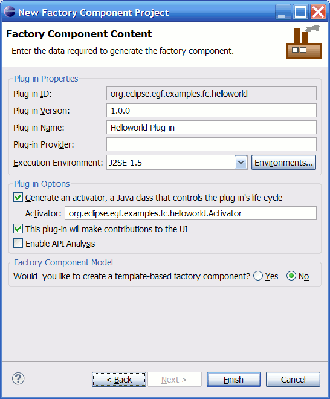
Uncheck the two plug-in checkboxes.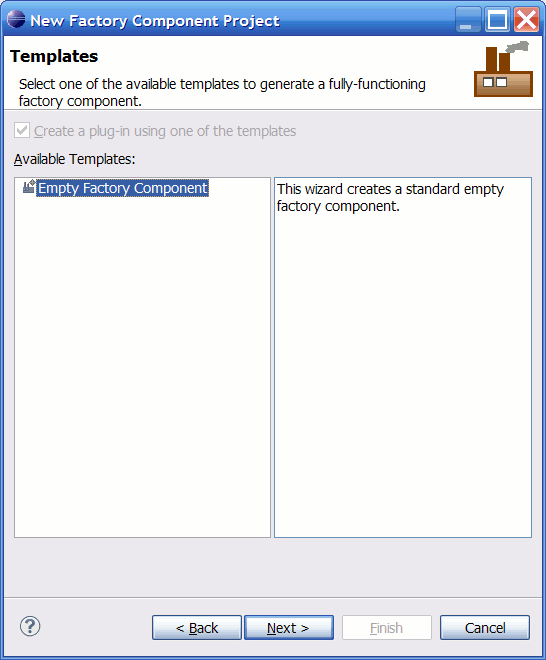
At the moment, only the Empty FC template is available.
 FC templates can be contributed via Extensions that match the org.eclipse.egf.pde.factoryComponentContent Extension-Point.
FC templates can be contributed via Extensions that match the org.eclipse.egf.pde.factoryComponentContent Extension-Point.
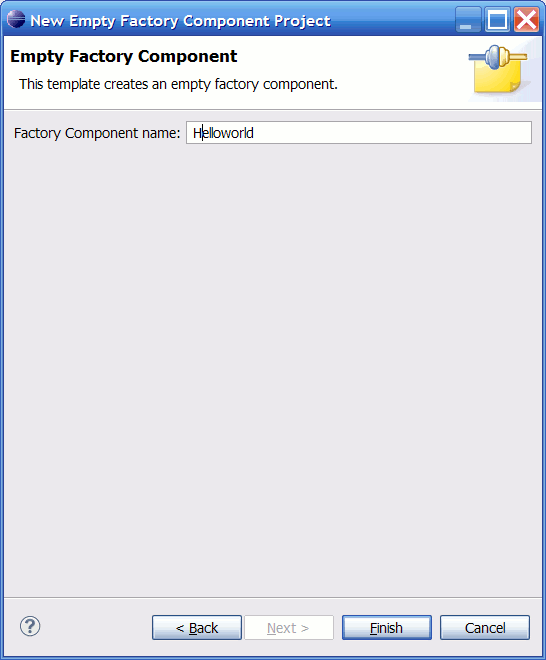
Finally click Finish.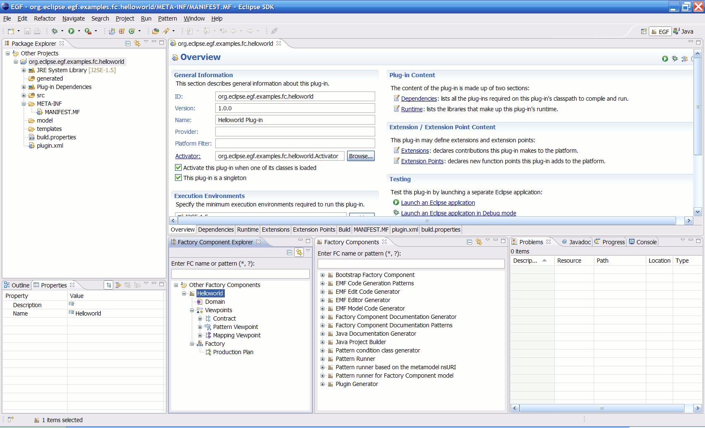
To display the famous message, our FC need to be productive. It is achieved by filling it with a task factory.
Let's create a task factory. This one must implement org.eclipse.egf.core.task.ITaskFactory interface as shown in the image below.
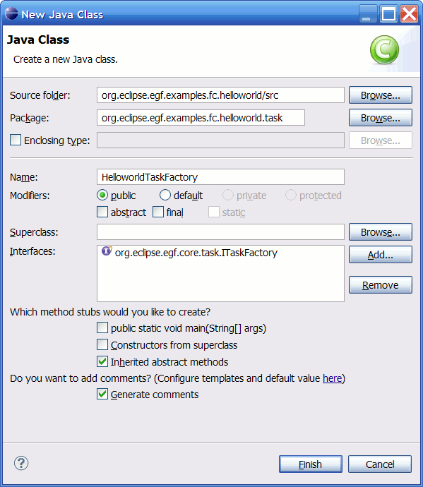
Give it the name class HelloworldTaskFactory and click Finish.
Check the "Inherited abstract methods" option to help you to implement the class.
You can notice the created class is located in package named x.y.tasks in the src source folder
as it is not a generated artifact.
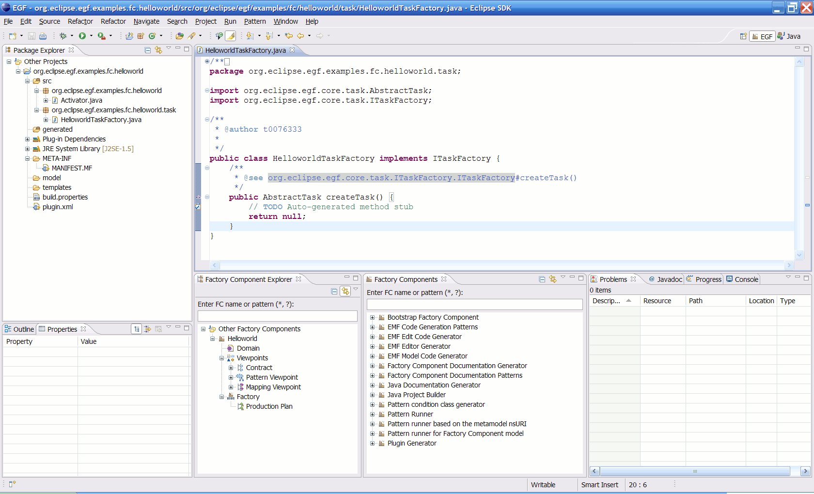
The task is in charge of what it's done. Here, we will implement a code that displays the famous message to the end-user. First, let's create a task. This one must extend org.eclipse.egf.core.task.AbstractTask class as shown in the image below.
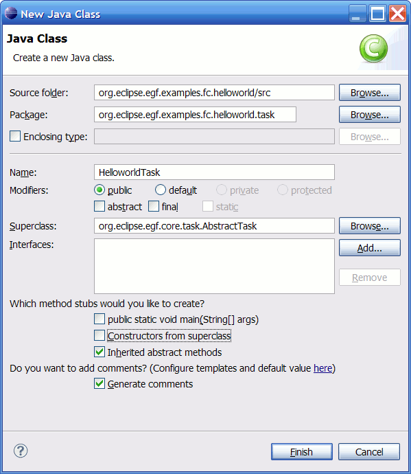
Give it the name class HelloworldTask and click Finish.
Check the "Inherited abstract methods" option to help you to implement the class.
You can notice the created class is located in package named x.y.tasks in the src source folder
as it is not a generated artifact.
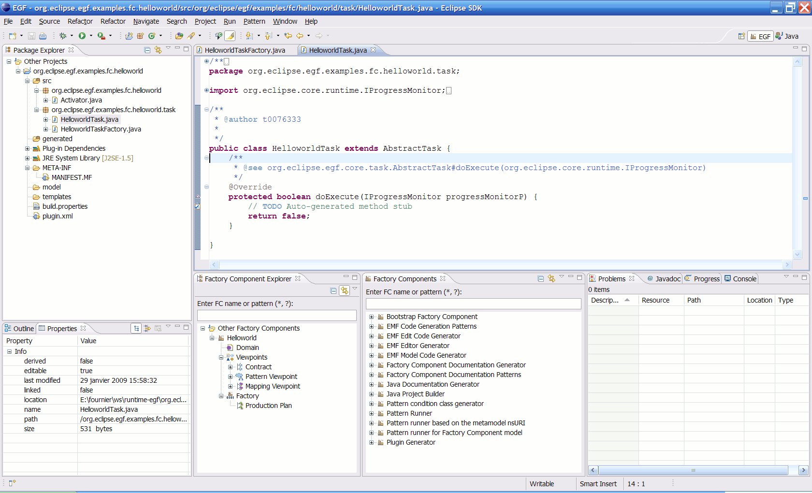
Now, we can implement the HelloworldTaskFactory in instantiating the HelloworldTask as shown below.
public AbstractTask createTask() {
return new HelloworldTask();
}
We want to add an additional message to the Hello message display.
To do that we need a valued variable that is used at the runtime time (N.B : the display is performed by the task implementation).
In EGF such a variable is a Contract Element. A contract element can reference another contract element. Hence, the value provided for the first one
will be automatically forwarded to the referenced one and so on...
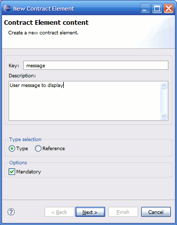
Description will be useful at the context element creation time, this concept is explained later.
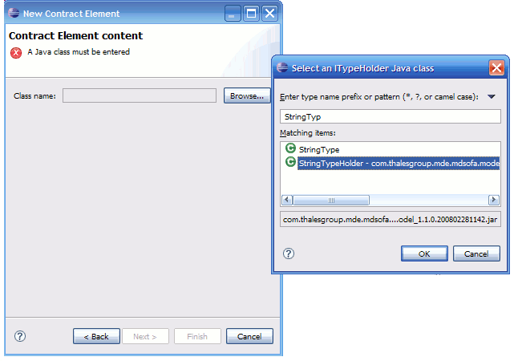
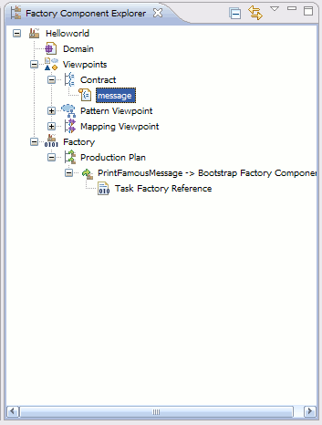
The yellow overlay reminds that the contract element is mandatory. The description is displayed in the status line.
Now we can implement the HelloworldTask that uses this contract element.
/** * Message contract tag used in the helloworld FC. */ privatestatic final String CONTRACT_MESSAGE_TAG = "message"; //$NON-NLS-1$
Define a constant regarding the message contract to get its value at runtime.
protected boolean doExecute(IProgressMonitor monitor_p) {
final  String message = (String) getContextElementValue(CONTRACT_MESSAGE_TAG);
// Display it to the end-user.
final Display display = PlatformUI.getWorkbench().getDisplay();
display.asyncExec(new Runnable() {
/**
* @see java.lang.Runnable#run()
*/
public void run() {
Shell shell = display.getActiveShell();
MessageDialog.openInformation(shell, "FC execution", "Hello " + message); //$NON-NLS-1$//$NON-NLS-2$
}
});
return true;
}
String message = (String) getContextElementValue(CONTRACT_MESSAGE_TAG);
// Display it to the end-user.
final Display display = PlatformUI.getWorkbench().getDisplay();
display.asyncExec(new Runnable() {
/**
* @see java.lang.Runnable#run()
*/
public void run() {
Shell shell = display.getActiveShell();
MessageDialog.openInformation(shell, "FC execution", "Hello " + message); //$NON-NLS-1$//$NON-NLS-2$
}
});
return true;
}
the getContextElementValue method provides by AbstractTask allows to get the value of a contract element by its key.
A valued contract element is named a context element.
Don't forget to organize (i.e update) Java imports (key binding : Ctrl+Shift+O).
A FC is executed through its factory. This one contains a production plan that orchestrates the job to be performed.
To create a FC that runs a TaskFactory, we have to create a factory component invocation that references the Bootstrap Factory Component in the production plan.
The created factory component invocation contains the TaskFactory to execute.
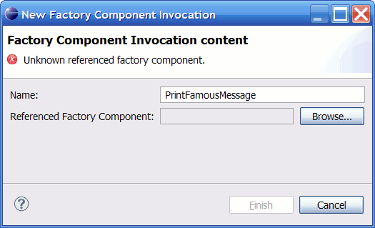
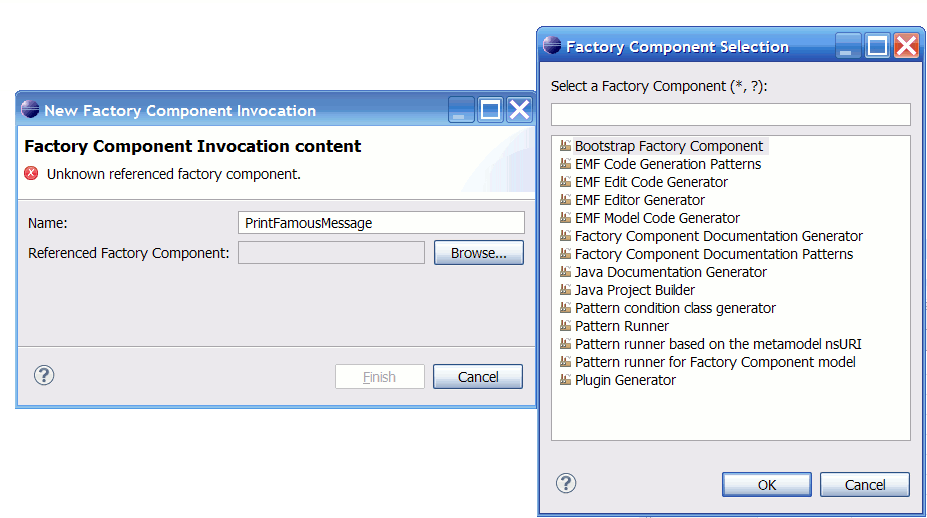
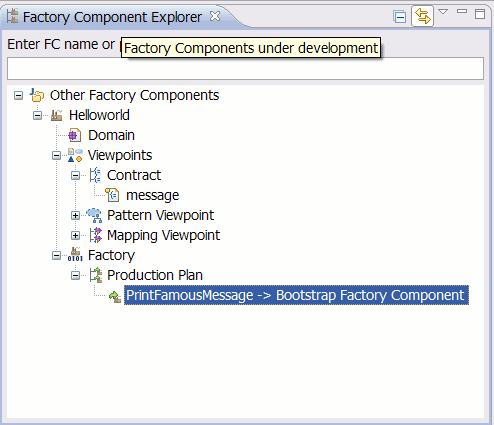
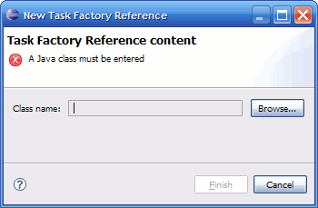

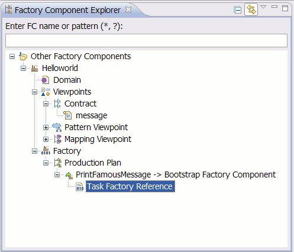
We have seen that a variable in EGF is named a contract element. The way to set it a value is through a context element.
Context element can be based on a contract element or a simple couple ((key, type), value).
To provide a context element that values a contract element defined in the same FC, it has to be created in the Production Plan context.
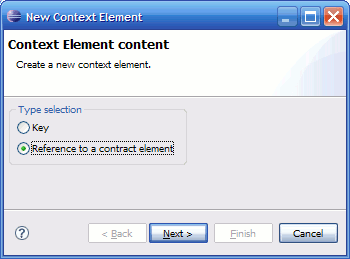
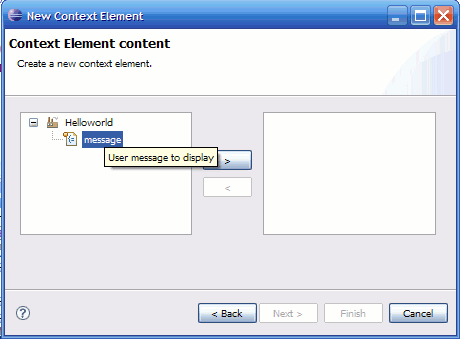
Description of the referenced contract element is displayed (mouse over the contract element) by a tooltip after a delay.
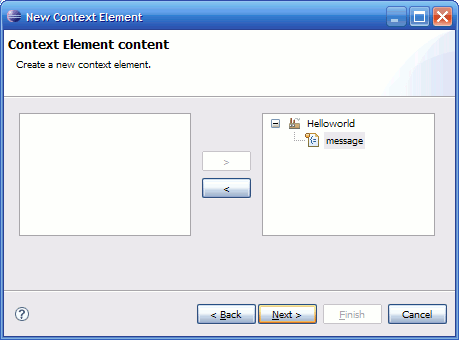
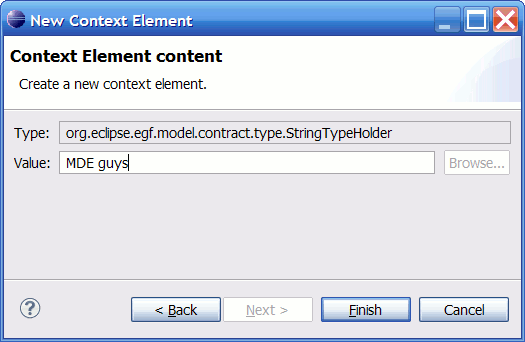
To execute a FC as a plug-in, it must be in the target platform.
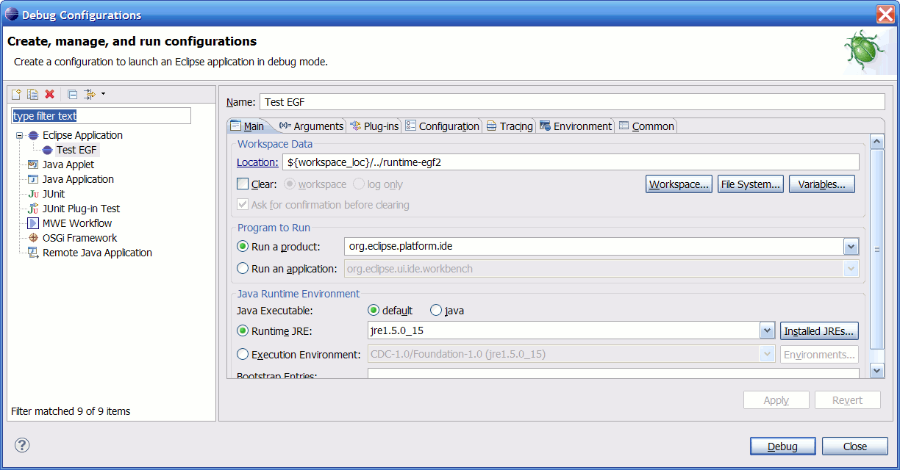
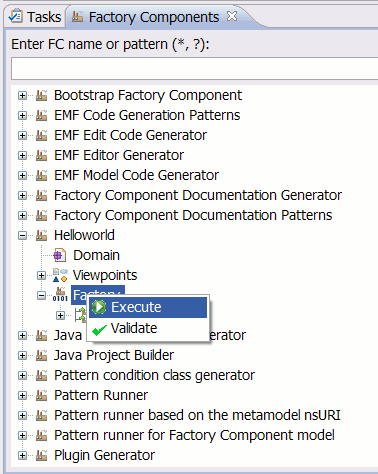
Here we are !!
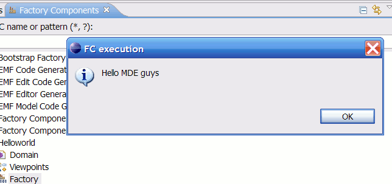
We have successfully developed a Helloworld FC. It can be executed to display the famous message to end-user.
Now, let's imagine, we want to create a new FC that references the Helloworld FC to provide it with the required contract element (i.e message).
So, the Helloworld FC won't be directly executed, but referenced by a new FC that provides it with a new message at runtime.
In this way, we are building a workflow that chains the FCs.
A FC exposes its contract through its contract elements that are used in its factory.
When referencing another FC, a FC could value exposed contract elements by referenced FCs or re-export them in creating new contract elements based on them (depending on needs).
In fact, the contract part can be considered as the FC public API.
So as to create our second example, the following steps are required :
Step 1. Create a new FC
Let's create a new FC as we did at step 1 in the previous example.
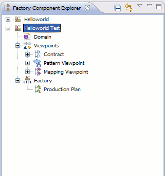
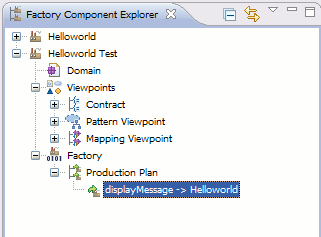
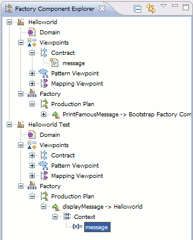
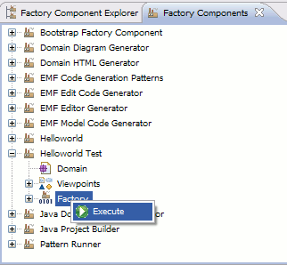
Here we are !!
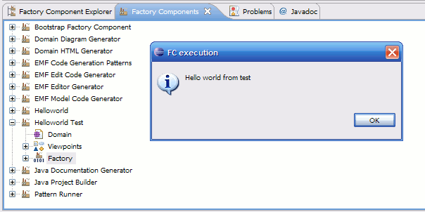
The context element defined in the Helloworld FC is overridden by the one defined in Helloworld Test FC.
FC that defines contract elements can provide default values this way.
Now, we will modify the Helloworld Test FC to deal with multiple contexts in order to understand how it works.
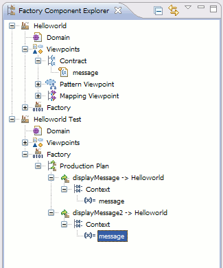
As you can see the two contexts are isolated. Each factory component invocation has its own context.
Let's imagine we want to display the same message at runtime. So, we don't want to declare contexts twice for a same value at the end.
The goal is to have only one context value used in both factory component invocations.
This is achieved here through contract references mechanism and production plan context.
To create a contract that references other ones, check the Reference option in the contract element wizard page. A contract can reference several contract elements but they must have the same type.
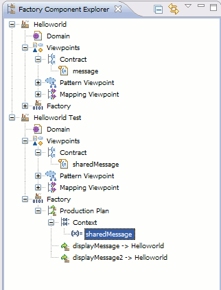
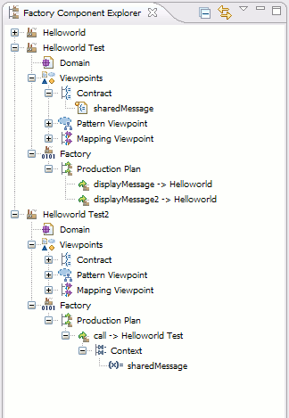
When it comes to giving the context at execution time, then the creation of a dynamic FC is required.
Such a FC is a transient one, created in memory, and delegating to the one that we want to feed dynamically.
This is achieved here through the use of the task factory.
Our example steps are :
Now that you are familiar with the creation of a new FC and a task factory, create it with the HelloWorld Dynamic Test name.
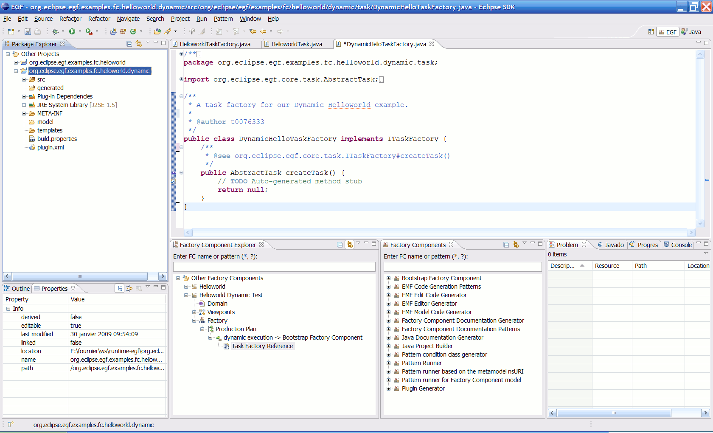
Create a new task (get a glimpse at HelloWorld step 3).
The goal of this task is to read a messages file, to extract the messages, and then to call HelloWorld FC for each message.
Don't forget to register the task in the task factory before proceeding !
For now, we will be exposing in detail the content of the doExecute method.
We'll start with the reading of the file.
Messages in the messages.txt file are separated by commas in our example.
// Read the messages file.
String helloMessages = FileHelper.readFile(PLUGIN_ID + "/resources/messages.txt"); //$NON-NLS-1$
// Get messages.
String[] messages = StringHelper.getTokens(helloMessages, ICommonConstants.EMPTY_STRING + ICommonConstants.COMMA_CHARACTER);
The FileHelper and StringHelper classes are provided
by EGF Engine. The first one allows to handle files through relative paths (starting with the plug-in id) when the second
is providing extra services on strings. FileHelper accesses workspace or platform resources indifferently.
// Create a FC dynamically.
FactoryComponent dynamicFc = ModelFactory.eINSTANCE.createFactoryComponent();
dynamicFc.setName("Dynamic HelloWorld Runner"); //$NON-NLS-1$
You can pick up whatever name is your liking, this is just a logical one that will be displayed when executing its factory.
// Set the factory.
Factory factory = ModelFactory.eINSTANCE.createFactory();
dynamicFc.setFactory(factory);
A factory is in need for a production plan, let's create it.
// Add a production plan.
ProductionPlan productionPlan = ModelFactory.eINSTANCE.createProductionPlan();
factory.setProductionPlan(productionPlan);
Add a call to HelloWorld for every message.
// Add call to HelloWorld for each message.
for (String message : messages) {
delegateToHelloWorld(productionPlan, message);
}
At this point, the FC is constructed in memory, and ready to be executed.
// Now the FC is ready for action.
// Register it.
FactoryComponentRegistry factoryComponentRegistry = CoreActivator.getDefault().getFactoryComponentRegistry();
String factoryComponentId = factoryComponent.getId();
factoryComponentRegistry.addFactoryComponent(factoryComponentId, factoryComponent);
// Execute it.
boolean result = CoreActivator.getDefault().generateFactoryComponent(factoryComponentId, progressMonitor_p, false);
// The FC is no longer needed, unregister it.
factoryComponentRegistry.removeFactoryComponent(factoryComponentId);
The whole code for the task class is the following one :
/**
* The dynamic HelloWorld task of the tutorial part 1 example.
* @author t0076261
*/
public class DynamicHelloTask extends AbstractTask {
/**
* Referenced FC id.
*/
private static final String REFERENCED_FC_ID = "factoryComponent.1204214642640.24"; //$NON-NLS-1$
/**
* Referenced contract element id (in referenced FC).
*/
private static final String REFERENCED_FC_CONTRACT_ELEMENT_ID = "contractElement.1204217622578.29"; //$NON-NLS-1$
/**
* Current plug-in id.
* If you're plug-in is declaring an activator, get it from the activator directly.
*/
private static final String PLUGIN_ID = "org.eclipse.egf.examples.fc.helloworld.dynamic.test"; //$NON-NLS-1$
/**
* @see org.eclipse.egf.core.task.AbstractTask#doExecute(org.eclipse.core.runtime.IProgressMonitor)
*/
@Override
protected boolean doExecute(IProgressMonitor progressMonitor_p) {
// Read the messages file.
String helloMessages = FileHelper.readFile(PLUGIN_ID + "/resources/messages.txt"); //$NON-NLS-1$
// Get messages.
String[] messages = StringHelper.getTokens(helloMessages, ICommonConstants.EMPTY_STRING + ICommonConstants.COMMA_CHARACTER);
// Create a FC dynamically.
FactoryComponent factoryComponent = ModelFactory.eINSTANCE.createFactoryComponent();
factoryComponent.setName("Dynamic HelloWorld Runner"); //$NON-NLS-1$
// Set the factory.
Factory factory = ModelFactory.eINSTANCE.createFactory();
factoryComponent.setFactory(factory);
// Add a production plan.
ProductionPlan productionPlan = ModelFactory.eINSTANCE.createProductionPlan();
factory.setProductionPlan(productionPlan);
// Add call to HelloWorld for each message.
for (String message : messages) {
delegateToHelloWorld(productionPlan, message);
}
// Now the FC is ready for action.
// Register it.
FactoryComponentRegistry factoryComponentRegistry = CoreActivator.getDefault().getFactoryComponentRegistry();
String factoryComponentId = factoryComponent.getId();
factoryComponentRegistry.addFactoryComponent(factoryComponentId, factoryComponent);
// Execute it.
boolean result = CoreActivator.getDefault().generateFactoryComponent(factoryComponentId, progressMonitor_p, false);
// The FC is no longer needed, unregister it.
factoryComponentRegistry.removeFactoryComponent(factoryComponentId);
return result;
}
/**
* Add a new call to HelloWorld with given message.
* @param productionPlan_p
* @param helloMessage_p
*/
protected void delegateToHelloWorld(ProductionPlan productionPlan_p, String helloMessage_p) {
// Create a factory component invocation.
FactoryComponentInvocation factoryComponentInvocation = ModelFactory.eINSTANCE.createFactoryComponentInvocation();
// Add factory component invocation to production plan.
productionPlan_p.getFactoryComponentInvocations().add(factoryComponentInvocation);
factoryComponentInvocation.setFactoryComponentId(REFERENCED_FC_ID);
// Add a default context.
Context context = ModelFactory.eINSTANCE.createContext();
factoryComponentInvocation.setContext(context);
// Create empty context element and add it to context.
ContextElement contextElement = ModelFactory.eINSTANCE.createContextElement();
context.getContextElements().add(contextElement);
// Create contract element reference and fill it.
ContractElementReference contractElementRef = ModelFactory.eINSTANCE.createContractElementReference();
contractElementRef.setReferencedFactoryComponentId(REFERENCED_FC_ID);
contractElementRef.setReferencedContractElementId(REFERENCED_FC_CONTRACT_ELEMENT_ID);
// Set context element reference.
contextElement.setContractElementReference(contractElementRef);
// Set context element value.
contextElement.setReadableValue(helloMessage_p);
// Set plug-in id.
contextElement.setPluginId(PLUGIN_ID);
}
}
Let us comment a bit the delegateToHelloWorld method.
For each hello message, a new FactoryComponentInvocation is created, just as it would be done in the Factory Component Explorer.
Creating such an element requires to know exactly which FC is to be used (here HelloWorld).
This is done by providing the id of the FC. Here it's located in the REFERENCED_FC_ID constant.
Make sure you're replacing this value with the one of your HelloWorld FC. You can get this value by selecting the HelloWorld
FC in the Factory Component Explorer and displaying its advanced properties. This is the one named Id.
Just as we need to know the referenced FC id, we also need to know the referenced contract element id, so as to provide a
context element that will give the contract a value.
This is is located in the REFERENCED_FC_CONTRACT_ELEMENT_ID constant.
Make sure you're replacing this one too. You can access its value by selecting the message contract
of HelloWorld and displaying its advanced properties. This is again the one named Id.
The easiest part is to provide the newly created context element with a value.
Simply invoke setReadableValue with the message to display.
Providing the context element with the plug-in id can prove to be very useful.
Although this is not required here, this is something you want to do each time.
Indeed, for some ITypeHolder implementations, this will cause errors not to provide it. Remember that
the readable value is interpreted by the type holder in the end (at generation time).
One last thing to do, is to provide the HelloWorld Dynamic Test FC with data to read.
Just create a text file named messages.txt in your plug-in project root/resources newly created (if not already
existing) folder. The content of this file must be messages separated by commas, as displayed below :
Melody,Mozart,Orchestra
You may also have to change the PLUGIN_ID constant to fit your needs.
This is just about either deploying the resulting plug-in and re-launching the workbench, or simply launching a new workbench from
here. Then execute the HelloWorld Dynamic Test factory.
The execution leads to having a dialog box per message in the provided messages.txt file.